Overview
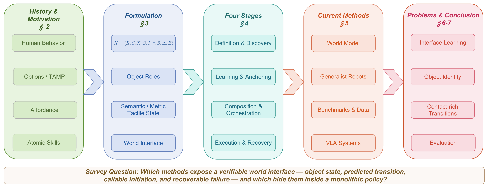
PraxisWorld treats manipulation as a world state -> action interface -> state transition problem. Instead of reading verbs such as pick, place, and insert as complete skill definitions, it asks which objects, contact modes, tolerances, initiation conditions, effects, and recovery checks make a physical transition executable.
Motivation
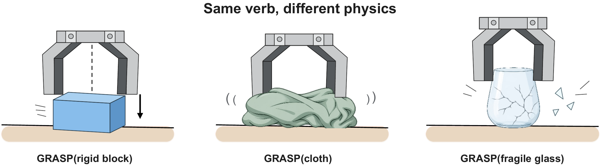
Framework
The survey formalizes an atomic skill as K=(R, S, X, C, I, pi, beta, Delta, E), connecting object anchors, world state, embodiment, contact constraints, initiation, policy, termination, predicted effect, and verification signals.
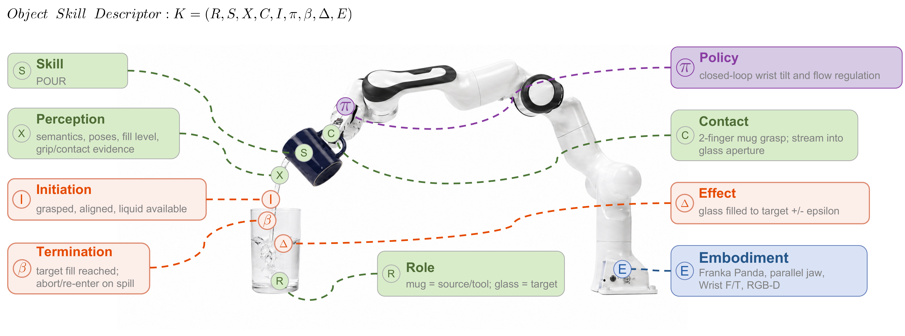
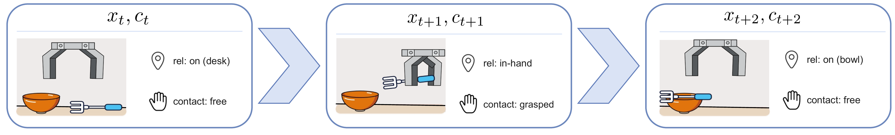
Lifecycle
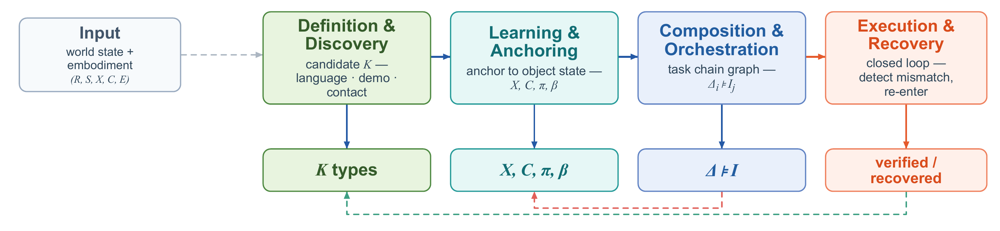
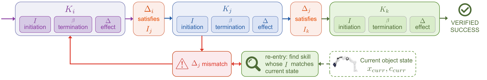
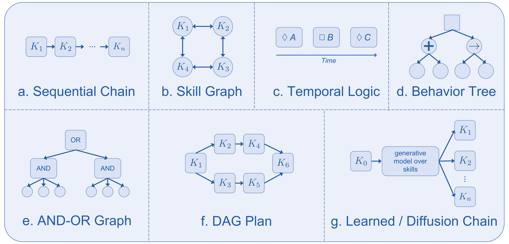
Current Methods
PraxisWorld rereads current systems by asking what part of the world-action loop they expose: observed object state, transition prediction, callable interface, verification, or recovery. JEPA-style and action-conditioned world models are analyzed as transition-interface estimators.
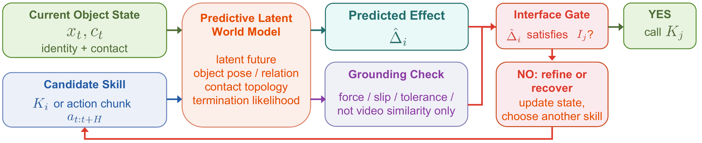
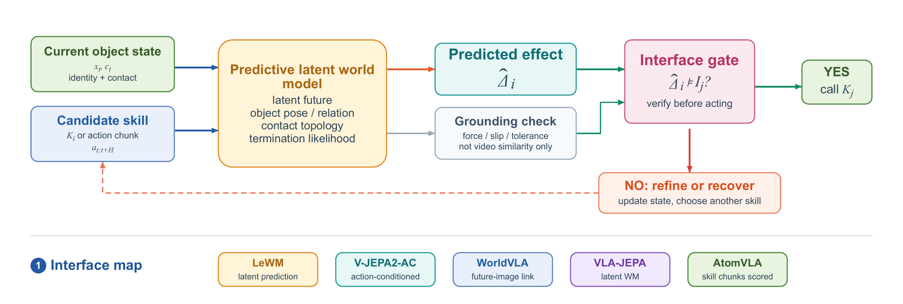
Meta-World Probe
The manuscript includes a compact Meta-World V3 diagnostic over basketball, bin-picking, and shelf-place. The probe checks whether an explicit object-state gate can detect perturbed skill-boundary transitions and support recovery.
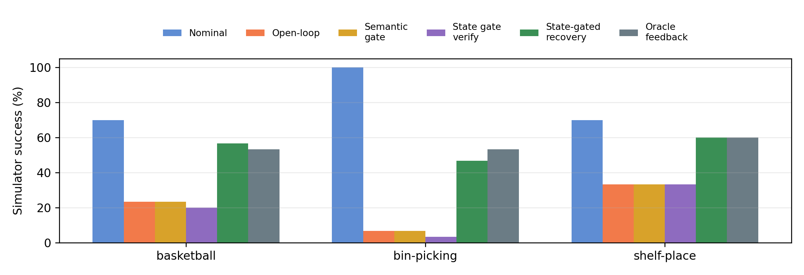
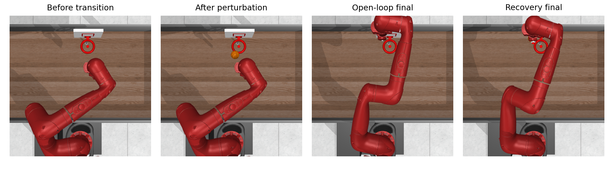
Citation
@misc{huang2026praxisworld,
title={PraxisWorld: Object-Centric World-Action Model for Composable Robot Manipulation},
author={Huang, Yu-song and Li, Yu-yan and Wang, Hao-tian and Qiu, Xiao-yun and Lu, Hong-liang and Xu, Wen-peng and Sheng, Yang-gang and Kuang, Zhao-nian and Chen, Yi-jie and He, Jin-tao and Liu, Dong-ling and Zheng, Xin-hu},
year={2026},
note={Survey manuscript}
}